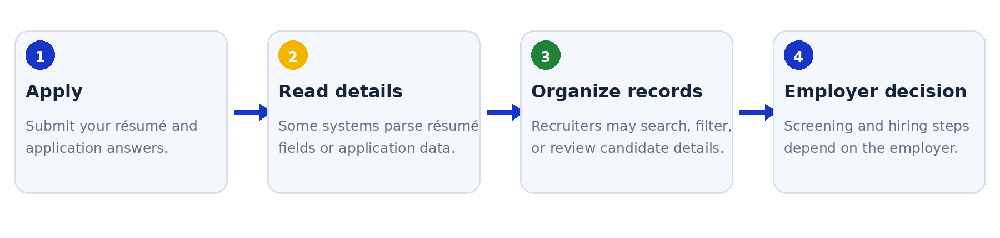

Loading...
ATS Basics
How Applicant Tracking Systems Work
What they do, why it matters, and how to work with them.
3–4 minute read

When you apply online, an applicant tracking system (ATS) may help the employer collect, organize, and review applications. Depending on the setup, it may extract resume details, help recruiters search records, or support screening.
What is an ATS?
An ATS is an employer’s hiring workspace. It keeps applications together and can help move them through hiring stages. Some systems also include tools for reading resume details, searching candidate records, or supporting screening.
Why it matters
Employers may use filters or requirements to narrow a large pool. A resume that is hard to read, or an application answer that misses a stated requirement, can make relevant experience harder to find. The impact varies—and a parsing problem alone does not explain why an employer made a decision.
“Half the companies in the United States have a filter to exclude applicants who have not been employed in the last six months…”
— Joseph B. Fuller in the Harvard Gazette, September 15, 2021
In that 2021 interview, Fuller also described filters for past gaps longer than six months. These examples show how filters can hide qualified people when employers use a work gap or a narrow resume signal as a shortcut for assessing ability.
How it works

An ATS can collect applications, parse resumes, organize candidate data, and make it searchable. Employers decide which features to use and how to review the results.
Workflow: Apply → Read details → Organize records → Employer decision. A simplified workflow. Not every employer uses every feature.
Review what the application fills in
“Resume parsing is designed to save time, but can make mistakes.”
— Greenhouse, MyGreenhouse FAQ for Candidates
How to work with it
You do not need hidden keywords or a resume designed to trick software. Make your real qualifications easy for both a system and a person to understand:
- Use clear headings such as Experience, Education, and Skills. Keep dates and job titles easy to find.
- Use terms from the job posting when they accurately describe your skills and experience.
- Keep important details in selectable text and use a straightforward reading order. Follow the employer’s file instructions. Even a clear layout can be parsed incorrectly.
- Review the information the application fills in for you and correct errors before submitting.
A clearer description
- VAGUE — “Helped with reports.”
- SPECIFIC — “Prepared monthly financial reports for senior management.”
Use the specific version only if it accurately describes your work.
The EEOC explains that some assessment tools can screen out qualified applicants with disabilities. If you need an accommodation during the application process, you can ask the employer for one.
Ready to work on your resume?
Use what you’ve learned with Creating Tomorrow’s free tools.